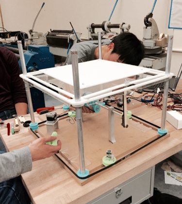
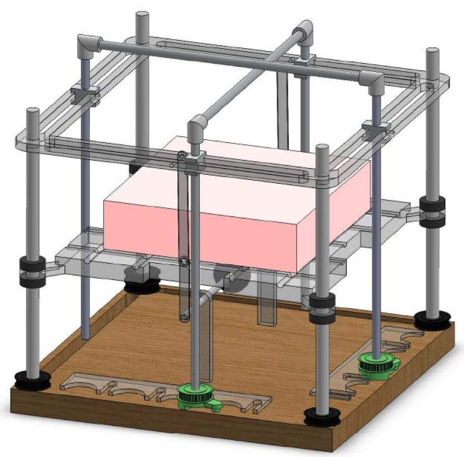

Designed an automized cake cutter to cut a square cake into 16 equal pieces. This is achieved with a cutting frame that moves up and down at a constant predetermined speed. The cutting frame uses taut piano wire that slides along channels of the frame. Every time the frame rises, there is a mechanism that move the position of this piano wire to prepare to cut the next section of cake.
A classic four bar linkage is used to drive the cutting mechanism. A gear belt system with 2 linear geneva mechanisms drive the position of the cake cutter.